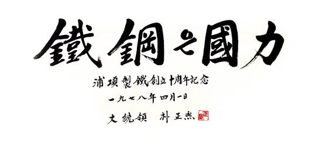
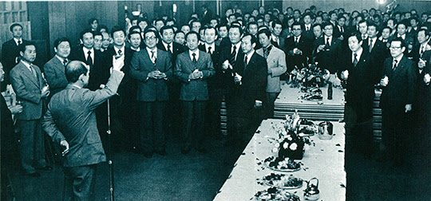
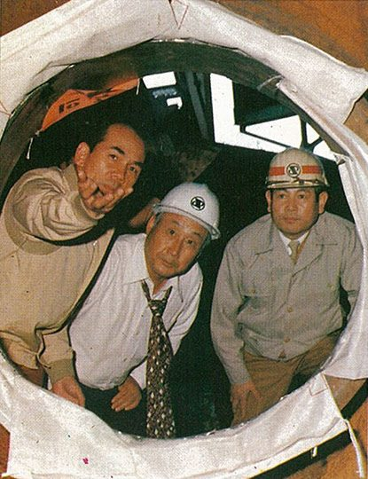

연재일 2015-03-17출처 조선일보 프리미엄조선 연재
1978년 4월 1일 포스코는 창립 10주년을 맞이했다. 박정희가 선물을 보내왔다. ‘鐵鋼은 國力’이라는 친필 휘호였다. 포스코 창립 10주년. 박태준은 누구보다 가슴이 벅찼다. 그는 기념사에서 솔직한 속내를 굳이 숨기려 하지 않았다.

“포철 창립 10주년은, 충실한 사명감과 정열의 화신이었던 우리가 10년의 젊음을 불태워 봉사한 대가로서 온 겨레에게 희망과 용기를 안기고 후대에는 영광을 물릴 수 있게 된 것을 확인하는 제전(祭典)입니다. 본인은 여러분과 더불어 허다한 난관을 극복한 경험에서 ‘행운의 여신은 민족적 대의를 위하여 인내와 끈기로 슬기롭게 정진하는 자의 편에 선다’는 확신을 저버릴 수가 없습니다.”
한국 일간지들이 일제히 ‘포철 10년의 의의’에 찬사와 격려를 보냈다.
<오일쇼크 이후 대부분의 제철소들이 조단(操短)과 운휴 속에 빠뜨려지고 있는 지금까지 포철은 도리어 평균 110%라는 높은 가동률을 유지하면서, 그동안 도합 820억 원이라는 순이익을 올렸던 것이며, 공장 확장공사의 소요내자 중 66%에 해당하는 2천848억 원을 자체 조달해왔다는 점은 특기할 만한 사실이 아닐 수 없다.>《조선일보》1978년 4월 1일
<외국의 전문가들을 놀라게 한 포철이야말로, 우리 힘을 결집하기만 하면 못 해낼 것이 없다는 공업한국의 의지를 표상하는 상징적 존재이다.>《한국일보》1978년 4월 1일
<포철 10년의 경영성과는, 다른 국영기업체들이 빠지기 쉬운 안이한 매너리즘을 탈피하여 합리적으로 경영돼왔음을 실증하는 것이다.>《동아일보》1978년 4월 2일

현대와 겨루는 포스코에게는 응원가 같은 ‘사설’들이었다. 물론 신문들은 축하와 격려 뒤에 ‘제2제철소 쟁탈전’ 예고도 빼놓지 않았다. 제2제철소 건설 사업자 선정에 대해 정부가 거시적인 안목에서 정책적으로 신중히 배려해야 한다는 지적이 많았다. 기술과 자본과 경험의 축적도 고려해야 한다는 주장도 제기했다. 이것은 포스코에게 응원가였다.
현대도 가지런히 논리를 펼쳤다.
<조만간 중동건설의 특수경기가 하강기에 접어들게 되니 ‘풍부한 돈과 인력과 중장비’를 곧바로 제철소 건설에 투입할 수 있다. 자동차, 중공업, 조선소, 건설 등 철을 대량 소비하는 업체를 소유하고 있다. 정부의 재정 지원을 받지 않고도 건설비를 조달할 수 있다. 현대그룹의 역량을 활용하면 제철소 건설과 제품생산에 필요한 기술력을 동원할 수 있다. 해외지사를 움직이면 제철소에 들어갈 원료를 확보할 수 있다. 국내 철강업에 경쟁사가 들어섬으로써 선의의 경쟁을 유발할 수 있다.>
현대는 ‘선의의 경쟁’이라는 포장 속에다 ‘포철의 철강 독과점체제’를 공격할 비수를 감추고 있었다. ‘독과점은 폐해를 낳을 수밖에 없다’는 주장은 그 실태와는 무관하게 인간의 정서에 무조건 옳은 소리로 들릴 만한 것이었다. 그러나 그때 포스코로선 억울한 노릇이었다. 시장독과점을 악용해 자사이기주의에 빠져 있었다면 당연히 비판받아야 하지만, 조상의 혈세로 세운 국민기업으로서 국가적 대의를 경영원칙으로 삼아왔기 때문이다.
현대가 힘주어 외치는 ‘선의의 경쟁’은 오원철의 주장이기도 하고 박정희의 방침이기도 했다. 1974년부터 박정희 대통령의 중화학공업 건설과 방위산업 건설을 보좌해온 오원철 경제2수석은 뒷날의 회고에서 박정희 방식의 ‘독점과 경쟁의 배합 전략’을 이렇게 정리했다.
<1960년대에서 1970년대에는 수요가 부족해서, 국제 규모의 공장을 건설하는데 큰 어려움을 겪었다. 국제 규모에 미달하는 공장이라는 것은 단적으로 말해서 국제경쟁력이 없는 공장이라는 뜻이다. 당연히 생산 제품은 국제가격보다 비쌀 수밖에 없고, 따라서 수출한다는 것은 불가능하다. 이럴 때는 하루속히 국제 규모의 공장으로 키워나가는 것이 우선적 과제였다. 즉 독점은 국제경쟁력이 생기고 난 후의 문제라는 뜻이다.
이 독점 공장이 일단 국제규모화가 된 후에는 즉시 또 하나의 회사를 설립해서 경쟁체제로 가야 한다는 것이 박 대통령의 방침이었다. 그래야만 선의의 경쟁이 일어나서 품질향상과 가격인하가 이뤄지고 국제경쟁력 강화가 계속된다는 이론이었다. 여기에 해당하는 것이 ‘석유화학과 종합제철’이었다.>
정주영의 현대에게는 ‘선의의 경쟁’이 박태준의 포스코를 이길 수 있는 최강의 무기였으며, 청와대 경제비서진에게는 ‘선의의 경쟁’이 정주영의 현대를 밀어줄 수 있는 윤리적 기반이었다. 그러나 그들이 ‘선의의 경쟁’에 도달하는 논리를 자세히 들여다보면 박태준의 포스코에는 한참 빗나가는 것이었다. 품질향상, 가격인하, 국제경쟁력이라는 기준이 그러했다. 그것들은 이미 박태준의 경영원칙이 실천해오는 덕목들이었다.
또한 연산 1000만 톤 정도의 제철소를 ‘규모의 경제’가 구현되는 미래의 국제규모 제철소라고 단정할 수 있을지도 의문이었으며, 아직은 갈 길이 먼 한국과 같은 환경에서 ‘건전한’ 선의의 경쟁이 보장될 수 있을지도 의문이었다.
제2제철소 주인이 현대냐 포철이냐. 언론의 표현은 ‘쟁탈전’이었지만, 3년 전에 그 권리를 확보했던 포스코로선 ‘방어전’이고 현대에겐 ‘공격전’이었다. 무릇 전투가 그렇듯이 초기 형세는 선제 공격자가 유리하기 마련이다. 그러나 포스코 창립 10주년 행사 직후, 현대는 소나기를 피하려는 작전인지 숨을 고르는 듯했다. 이때 박태준이 직접 신문에 등장하여 일갈을 한다.
조선일보 선우휘 주필의 애독자 많은 대담「차 한 잔을 나누며」에 나간 것이다. 대담은 포스코 영빈관 ‘청송대’에서 이뤄졌다. 선우휘는 포항종합제철에 보내는 ‘영일만의 기적’이란 찬사에 동의하는 언론인이고 작가였다.
“정말로 훌륭한 일을 하셨습니다. 국민의 한 사람으로서 경의를 표합니다. 저도 6‧25전쟁터에서 고생한 경험이 있지만, 우리 국민 모두가 조국의 경제전쟁을 승리로 이끌어온 박 사장님의 노고에 훈장을 드려야겠습니다.”

선우휘는 깍듯하게 인사부터 차리고 대담을 시작했다. 1978년 4월 18일 《조선일보》에 실린 대담에서 박태준의 일갈만 다시 들어보자.
선우 : 4월 1일이면 만우절인데 포항제철만은 거짓말이 아니었다는 얘기군요. (웃음) 그런데 근래에 거론되고 있는 제2제철 문제에 대해 박 사장님은 어떻게 생각하시는지요?
박 : 요즘 제2제철 문제가 항간에서 상당히 논의되고 있는 것 같습니다만, 기업이라면 수요가 증가하면 당연히 확대재생산을 추진하게 되는 것이고, 증산의 필요성이 느껴지면 그동안에 축적된 기술과 경험을 바탕으로 기업을 확장하게 되는 것입니다. 저희 회사도 그에 대비해서 수요추정을 KDI(한국개발연구원)나 KIST(한국과학기술연구소)를 통하여 계속해서 시켜왔고, 자체적으로도 경영정책실에서 한 해에 한 번씩 수요추정을 하고 있습니다.
오일파동 이후 세계 철강경기가 계속해서 불황상태에 있는데도 불구하고 국내 철강수요는 점점 더 늘어나고 있기 때문에, 과거에 했던 수요추정 자체가 좀 미심스럽다고 해서 다시 KIST와 용역을 맺어서 금년 6월 말까지 보고서가 나오게 돼 있어요.
그런 식으로 수시로 수요추정을 하면서 제2공장의 필요성 유무나 설비용량을 어느 정도로 해야 되겠느냐 하는 검토를 해오고 있고, 또한 이미 제철소를 보유한 선진국들의 설비용량이나 1인당 철강소비량도 제철설비를 확장해나가는 데 하나의 바로미터가 될 수 있기 때문에 수시로 비교, 검토해오고 있습니다. 그래서 우리는 제2공장이 필요하단 생각을 일찍부터 가졌고 또 그를 위하여 기술축적(해외연수비 2천200만 달러, 1천360명 육성)을 해왔고 이미 계획을 다 성안시켜놓고 있어요.
항간에서 어떤 민간 재벌이 한다든지 하는 보도도 간혹 나오는데 제 개인의 생각은 이미 명확히 정립되어 있습니다.
선우 : 새로 민간에서 하는 경우에는 완전히 백지에서부터 다시 시작해야 되는 것 아닙니까?
박 : 그렇지요. 저는 그래서 이 문제를 두 가지 각도에서 보아야 되지 않느냐 봅니다. 하나는 경제적 기술적 사업적인, 극히 실무적인 측면에서 보는 것이고, 또 하나는 우리나라가 앞으로도 계속해서 확대경제 정책을 지향해나갈 텐데 소위 기초물자에 대한 기본적인 관리방향을 어디로 끌고 갈 것이냐 하는 정책적인 측면이 있을 것입니다.
새로운 제철소를 건설한다고 하면 여기에서 사람이 빠져나갈 수밖에 없는데, 우리가 맡아서 계획적으로 엔지니어링 단계부터 건설, 조업에 이르기까지 단계별로 필요한 사람을 지명해서 보내면 효율적인 인력 활용이 가능하겠지만, 민간기업이 한다고 가정해보면, 경험 있는 사람은 우리 회사밖에 없는데 우리 회사에서 무작정 사람을 빼내가게 되었을 때 거기서 일어나는 부작용은 상상하기조차 무섭습니다. 계획적으로 사람이 빠져나가지 않으니까 양쪽이 모두 잘못될 가능성이 큽니다.
그밖에 제1공장이 이미 있는 상태에서 제2공장을 건설할 때에는 상호보완관계가 많이 이루어지기 때문에 절약 요인이 굉장히 많게 되지만, 새로 하려면 그 낭비는 엄청날 겁니다. 불필요한 설비가 더 추가되어야 하니까 자연히 부담이 가중되는 셈이지요. 그렇게 될 때에 과연 거기에서 나오는 제품의 원가에는 어떠한 영향을 끼치게 되겠느냐 하는 것은 명약관화한 일이겠지요.
어떤 시기에 가서 민영화를 하더라도 저의 개인적인 생각으로는 정부주도형 민영화가 바람직하지 않느냐 생각합니다. 국가경쟁력의 측면에서 보더라도 오늘날 영국, 오스트리아, 일본, 이탈리아, 인도 등 대부분의 나라들이 소수 (제철)공장들을 계속해서 통합해나가는 경향이 있는데, 우리나라와 같이 시장이 크지도 못한 나라에서 왜 이같은 기초산업을 두 개, 세 개로 나누어 추진할 필요가 있느냐 하는 겁니다.
자유경쟁의 효과를 말하는 사람이 있을는지 모르나, 철의 경우에는 미국도 현재 관리가격제이고 기초물자이기 때문에 정부에서 단속을 하고 있습니다.
차 한 잔에 담은 박태준의 일갈이 거둔 효과였을까. 4월 하순엔 포스코가 제2제철소 실수요자로 결정될 것이란 소문이 흘러나왔다. 그러나 5월의 상황은 달라졌다. 현대가 인천제철을 인수하면서 재공세에 나서고, 이에 발맞춰 일부 신문이 다시 ‘제2제철소 민영화’ 논의에 불을 지폈다.